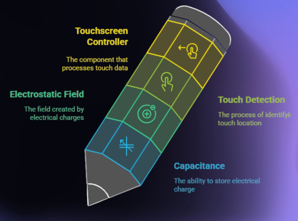
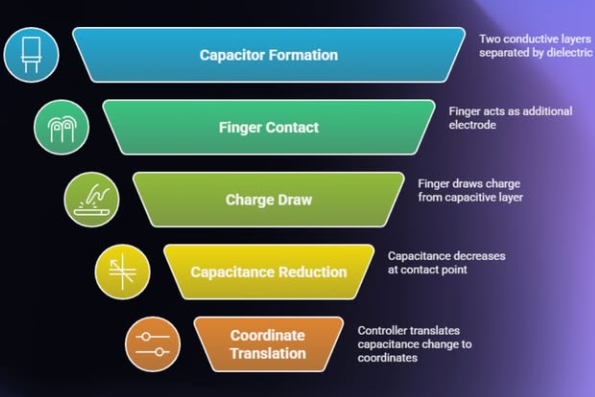
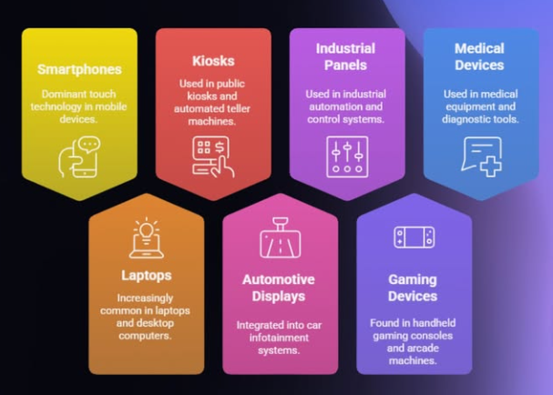

The Science Behind Every Tap and Swipe
Capacitive Touch Technology Works on the principle of the Human Body - Specifically,The Small Electric Charge your Skin Naturally Carries

The Device Interprets this change in capacitive (Electrical Charge) and converts it into a digital command -whether that's unlocking your phone, typing a message, or zooming in on a photo. Unlike Resistive Touchscreens that rely on Physical Pressure, Capacitive touch works purely through electrical interaction, making it faster, smoother, and more durable

From Smartphones and Tablets to ATMs, Cars and smart appliances-capacitive touch is everywhere, it also powers contactless systems like payment machines and sensor based controls,making daily life smarter and more convenient

Capacitive Touch Technology stands as a conference of modern design and interaction. by merging human biology with electronic precision, it openeed the door to intuitive, sleek, and interactive devices that define the digital age. the next time you unlock your phone, remember -you're completing an electrical circuit with just a touch.
Stay updated with more engineering insights and tech breakthroughs by following us on Instagram!
Follow @ewbsvce_insight